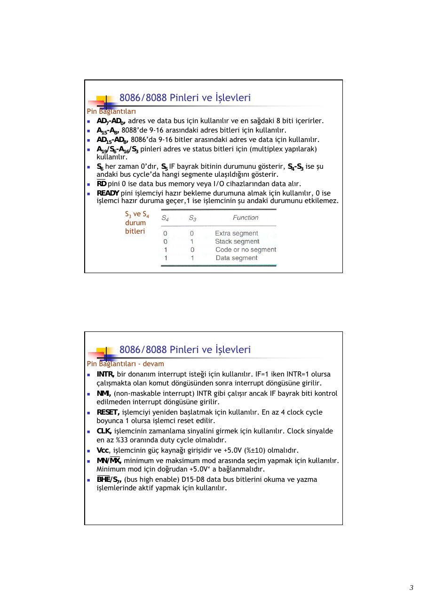
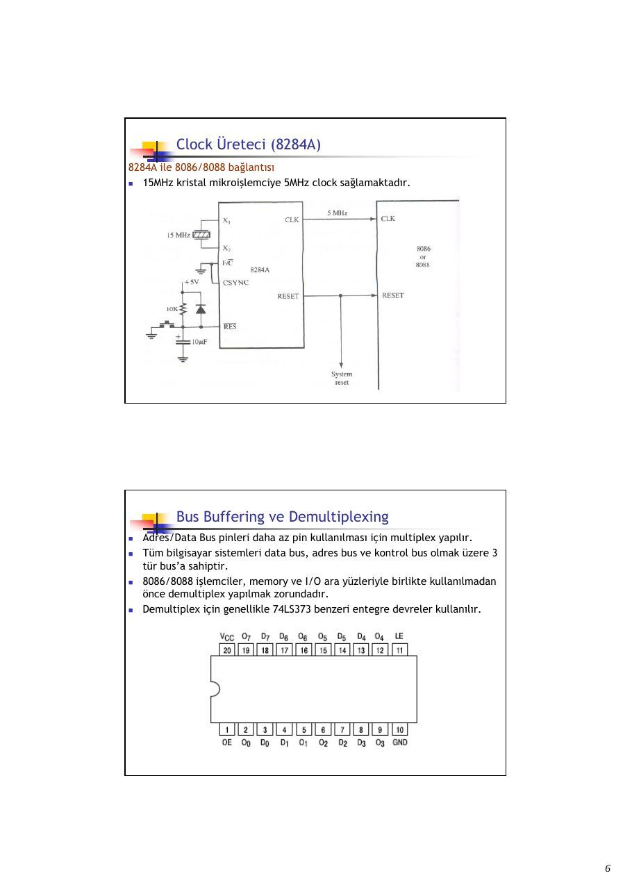
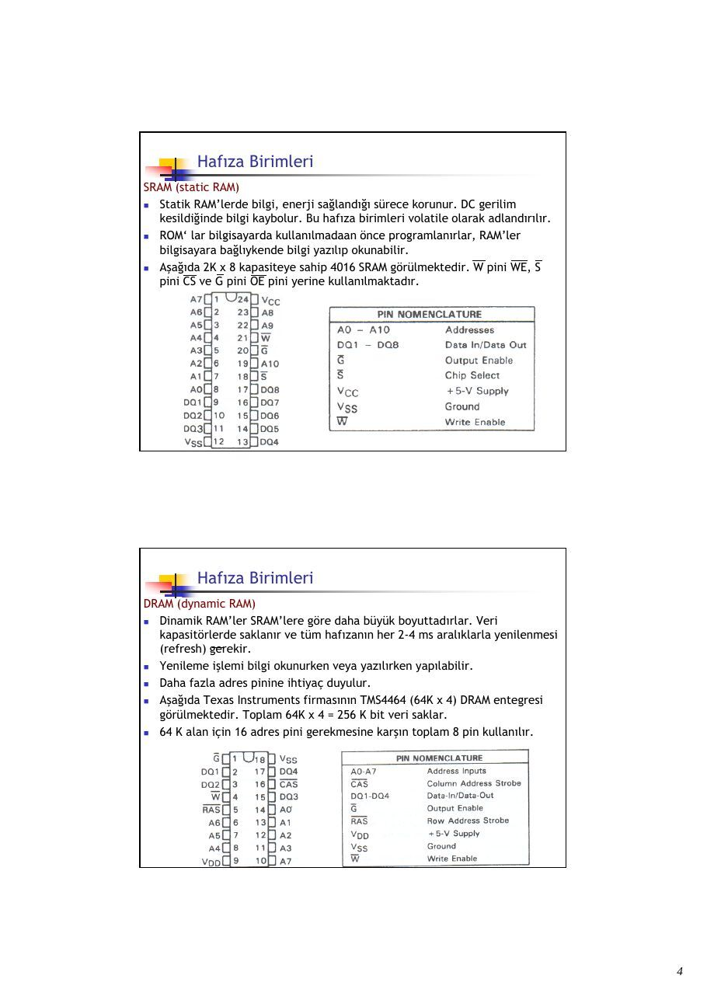
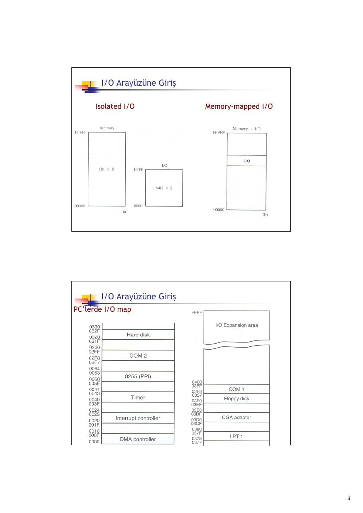

· EEM332
EEM332 Mikroişlemciler: Bellek ve I/O Arabirimi (Gazi Üniversitesi, M. Ali Akcayol)
EEM332 – Mikroişlemciler · 17.12.2008 · 18.10.2026
Bu yazı, Başkent Üniversitesi EEM332 Mikroişlemciler ders arşivindeki ilgili notları ve uygulamaları bir araya getiriyor (2008–2008). 8086/8088 donanımı, adres çözümleme, hafıza birimleri ve temel giriş-çıkış arayüzü. Kaynak: Gazi Üniversitesi, M. Ali Akcayol; BİL362 ders notları. Belgelerin PDF arşiv kopyaları ve varsa kaynak kodları yazının sonunda ZIP olarak indirilebilir.
Bu içerik üçüncü taraf bir kaynağa aittir; arşiv ve nostalji amacıyla kaynak belirtilerek paylaşılmıştır. Hak sahibinin talebi hâlinde kaldırılır.
CPUL9Hardware
BIL 362 Mikroişlemciler
M.Ali Akcayol Gazi Üniversitesi Bilgisayar Mühendisliği Bölümü
Konular 8086/8088 Donanım Özellikleri
- 8086/8088 Pinleri ve İşlevleri
- Clock Üreteci (8284A)
- Bus Buffering ve Demultiplexing
- Bus Timing
- Minimum ve Maksimum Mod
- Bus Denetleyici (8288)
- 8088 Bağlantıları ve Bus’lar
8086/8088 Pinleri ve İşlevleri
- 8086 ve 8088 40 pin ve dual-in-line (DIP) paketi şeklindedir.
8086/8088 Pinleri ve İşlevleri
- 8086 16-bit mikroişlemcidir ve 16-bit data bus’a sahiptir, 8088’de 16-bit
mikroişlemcidir ancak 8-bit data bus’a sahiptir.
- 8086’da AD0-AD15 data bus için kullanılır, 8088’de AD0-AD7 data bus için
kullanılır. 8086 daha etkin data transferi yapar.
- 8086 ve 8088 işlemciler +5.0V ile çalışır. 8086 360mA ve 8088 340mA
maksimum kaynak akımı kullanır.
- Mikroişlemcilere yapılan bağlantılarda giriş pini için gereken akıma ve çıkış
pini için gereken çıkış akımına dikkat edilmelidir.
- Aşağıda giriş ve çıkış pinleri için gerilim ve akım değerleri verilmiştir.
Giriş
Çıkış
8086/8088 Pinleri ve İşlevleri Pin Bağlantıları
- AD7-AD0, adres ve data bus için kullanılır ve en sağdaki 8 biti içerirler.
- A15-A8, 8088’de 9-16 arasındaki adres bitleri için kullanılır.
- AD15-AD8, 8086’da 9-16 bitler arasındaki adres ve data için kullanılır.
- A19/S6-A16/S3 pinleri adres ve status bitleri için (multiplex yapılarak)
kullanılır.
- S6 her zaman 0’dır, S5 IF bayrak bitinin durumunu gösterir, S4-S3 ise şu
andaki bus cycle’da hangi segmente ulaşıldığını gösterir.- RD pini 0 ise data bus memory veya I/O cihazlarından data alır.
- READY pini işlemciyi hazır bekleme durumuna almak için kullanılır, 0 ise
işlemci hazır duruma geçer,1 ise işlemcinin şu andaki durumunu etkilemez. S3 ve S4 durum bitleri
8086/8088 Pinleri ve İşlevleri Pin Bağlantıları - devam
- INTR, bir donanım interrupt isteği için kullanılır. IF=1 iken INTR=1 olursa
çalışmakta olan komut döngüsünden sonra interrupt döngüsüne girilir.
- NMI, (non-maskable interrupt) INTR gibi çalışır ancak IF bayrak biti kontrol
edilmeden interrupt döngüsüne girilir.
- RESET, işlemciyi yeniden başlatmak için kullanılır. En az 4 clock cycle
boyunca 1 olursa işlemci reset edilir.
- CLK, işlemcinin zamanlama sinyalini girmek için kullanılır. Clock sinyalde
en az %33 oranında duty cycle olmalıdır.
- Vcc, işlemcinin güç kaynağı girişidir ve +5.0V (%±10) olmalıdır.
- MN/MX, minimum ve maksimum mod arasında seçim yapmak için kullanılır.
Minimum mod için doğrudan +5.0V‘ a bağlanmalıdır.
- BHE/S7, (bus high enable) D15-D8 data bus bitlerini okuma ve yazma
işlemlerinde aktif yapmak için kullanılır.
8086/8088 Pinleri ve İşlevleri Pin Bağlantıları – devam – minimum mod pinleri
- IO/M veya M/IO, 8088 ve 8086 işlemcilerde memory veya I/O seçimi yapar.
- WR, 8086/8088 işlemcinin memory veya I/O cihazına data gönderdiğini
gösterir. 0 ise data bus, memory veya I/O için geçerli dataya sahiptir.
- INTA, INTR giriş pininden gelen interrupt’ın algılandığını gösterir.
- ALE, (adres latch enable) 8086/8088 işlemcilerde adres/data bus seçimini
yapar. 1 ise adres/data bus üzerinde adres bilgisi olduğunu gösterir.
- DT/R, (data transmit/receive) data bus’ta veri gönderildiğini(1) veya
alındığını(0) gösterir.
- SS0, IO/M ve DT/R ile birlikte
şimdiki bus cycle’nın fonksiyonunu çözümlemek için kullanılır (8088).
8086/8088 Pinleri ve İşlevleri Pin Bağlantıları – devam – maksimum mod pinleri
- S2,S1,S0, şimdiki bus cycle’ın fonksiyonunu gösterir. Bir bus denetleyici
(8288) tarafından çözülür.
- RQ/GT1 ve RQ/GT0, maksimum modda çalışırken DMA (direct memory
access) isteği için kullanılırlar. İki yönlüdürler(request ve grant yapılır.)
- QS1 ve QS0, (queue status) komut kuyruğunun durumunu gösterir.
Clock Üreteci (8284A)- 8284A clock üreteci 8086/8088 mikroişlemciler için yardımcı elemandır.
- Temel olarak clock üretme, RESET senkronizasyonu, READY
senkronizasyonu ve TTL (Transistor–Transistor Logic ) seviyesinde çevre birim clock sinyali üretme fonksiyonlarını gerçekleştirir.
- Toplam 18 pine sahiptir ve özellikle 8086/8088 işlemcilerle birlikte
kullanılmak için tasarlanmıştır.
Clock Üreteci (8284A)Pin fonksiyonları
- AEN1 ve AEN2, (address enable) bus hazır sinyallerini (RDY1 ve RDY2)
sağlamak için kullanılırlar.
- RDY1 ve RDY2, (bus ready) AEN1 ve AEN2 ile birlikte 8086/8088 işlemciyi
bekleme durumuna almak için kullanılırlar.
- READY, çıkış pinidir ve 8086/8088 READY girişine bağlıdır.
- X1 ve X2, kristal osilatör bağlantısı için kullanılır.
- EFI, (External Frequency Input) 1 ise clock sinyalin external bir giriş
tarafından üretileceğini belirler.
- F/C, (Frequency/Clock) 0 ise clock sinyalin 8284A tarafından üretileceği, 1
ise clock sinyalin EFI tarafından üretileceği seçilmiş olur.
- CLK, clock sinyal çıkışıdır ve 8086/8088 clock girişine bağlanır.
- RES, (reset input) 0 olduğunda reset işlemi başlatır.
- RESET, (reset output) 8086/8088 RESET girişine bağlıdır.
Clock Üreteci (8284A)8284A ile 8086/8088 bağlantısı
- 15MHz kristal mikroişlemciye 5MHz clock sağlamaktadır.
Bus Buffering ve Demultiplexing
- Adres/Data Bus pinleri daha az pin kullanılması için multiplex yapılır.
- Tüm bilgisayar sistemleri data bus, adres bus ve kontrol bus olmak üzere 3
tür bus’a sahiptir.
- 8086/8088 işlemciler, memory ve I/O ara yüzleriyle birlikte kullanılmadan
önce demultiplex yapılmak zorundadır.
- Demultiplex için genellikle 74LS373 benzeri entegre devreler kullanılır.
Bus Buffering ve Demultiplexing
- LE, (latch enable) 1 ise D flip-flop’unu aktif yapar, OE (output enable) 1
ise çıkışı yüksek direnç yapar.
- Doğruluk tablosu aşağıdaki gibidir.
8088 demultiplexing
8086 demultiplexing
8088 buffer
uni-directional
bi-directional
uni-directional
bi-directional
8086 buffer
Bus Timing
- Veri yazma ve okuma işlemlerinde data, adres ve kontrol bus’lar kullanılır.
- Eğer hafızaya veri yazılacaksa, yazılacak veri data bus’la, yazılacak yer
adres bus’la ve kontrol işaretleride kontrol bus’la gönderilmelidir.
- Kontrol işareti olarak WR (0) ile IO/M (0) (8088 için) veya M/IO (1) (8086
için) kullanılmalıdır.
Data Write
Bus Timing
- Eğer okuma yapılacaksa okunacak yer adres bus’la gönderilir.
- RD kontrol işaretiyle okunacak veri data bus’la alınır.
Data Read
Minimum ve Maksimum Mod
- 8086/8088 minimum ve maksimum olarak iki modda
çalışabilmektedir.
- MN/MX seçme pini +5.0V ‘a bağlanırsa minimum mod seçilmiş olur,
toprağa bağlandığında ise maksimum mod seçilmiş olur.
- Maksimum mod, yardımcı işlemci kullanılan sistemler için
tasarlanmıştır.
- 80286 ve üstü işlemcilerde maksimum mod yoktur.
- Minimum modda tüm kontrol işaretleri mikroişlemci tarafından
üretilir ve maliyet açısından ucuzdur.
- Maksimum modda bazı kontrol işaretleri external olarak üretilir ve
maliyeti daha fazladır.
- Maksimum modda external bus denetleyici kullanılır ve bus kontrol
işaretlerini üretir.
8088 minimum mod
8088 maksimum mod
Bus Denetleyici (8288)
- Maksimum mod çalışmada kontrol işaretleri 8086/8088 yerine 8288
tarafından üretilir.
- Durum girişleri olarak S0,S1 ve S2 çıkışlarını alır ve tüm kontrol
işaretlerini üretir.
Bus Denetleyici (8288)
- 8288 denetleyici girişleri ve üretilen kontrol işaretleri aşağıdaki
gibidir.
- S0, S1 ve S2 girişlerinin tümüde 1 olursa pasif duruma geçilmekte ve
komut üretilmemektedir.
Bus Denetleyici (8288) Pin fonksiyonları
- S0,S1 ve S2, durum girişleri. 8086/8088 durum çıkışlarına bağlıdır.
- CLK, clock girişi. 8284A clock üretecinin CLK çıkış pinine bağlıdır.
- ALE, (address latch enable) adres/data bus arasında demultiplex
için kullanılır.
- DEN, (data bus enable) bi-directional data bus buffer’ı kontrol eder.
- DT/R, (data transmit/receive) data bus üzerinden yazma/okuma
seçimi için kullanılır.
- AEN, (address enable) girişiyle 8288 memory kontrol sinyallerini
etkin yapar.
- CEN, (control enable) girişiyle 8288 kontrol çıkış pinleri aktif yapılır.
Bus Denetleyici (8288) Pin fonksiyonları
- IOWC, (I/O write command) I/O cihazı için write komutu üretir.
- IORC, (I/O read command) I/O cihazı için read komutu üretir.
- MWTC, (memory write command) memory için write komutu üretir.
- MRDC, (memory read command) memory için read komutu üretir.
- INTA, (interrupt acknowledge) INTR pininden gelen interrupt’a
cevap bilgisidir.
- IOB, (I/O bus mode) I/O bus mod ile system bus mod arasında seçim
yapar.
8088 Bağlantıları ve Bus’lar
- 8259 interrupt denetleyicisidir.


CPUL10Memory
BIL 362 Mikroişlemciler
M.Ali Akcayol Gazi Üniversitesi Bilgisayar Mühendisliği Bölümü
Konular Hafıza Arayüzü
- Hafıza Birimleri
- Adres Çözümleme
- 8088 ve 80188 Hafıza Arayüzü (8-bit)
- 8086, 80186, 80286 ve 80386SX Hafıza Arayüzü (16-bit)
- 80386DX ve 80486 Hafıza Arayüzü (32-bit)
- Pentium–Pentium 4 Hafıza Arayüzü (64-bit)
Hafıza Birimleri
- Hafıza elemanları ROM (read-only memory), flash memory (EEPROM), SRAM
(Static Random Access Memory) ve DRAM (Dynamic Random Access Memory) olarak sınıflandırılır.
- Bir hafıza elemanın adres bağlantıları, data bağlantıları, seçme bağlantıları
ve kontrol bağlantıları bulunur.
- Adres pin sayısı hafıza satır sayısını, data pin sayısı bir alana yazılacak bit
sayısını belirler. Seçme bağlantıları (CS, CE, S, vb) chip‘i yazma/okuma için aktif yapar. Kontrol pinleri bir tane (R/W), iki veya daha fazla (WE, OE) olabilir.
Hafıza Birimleri ROM (read-only memory)
- Programları sürekli olarak saklar, enerji kesildiğinde kaybolmaz
(nonvolatile memory).
- PROM (programmable read-only memory) bir kez programlanabilir
ve silinemez.
- EPROM (erasable programmable read-only memory) bir tür ROM
hafızadır ve yaklaşık 20 dakika ultraviyole ışını uygulanarak silinebilmektedir.
- Yeni tip RMM (read mostly memory) flash memory olarak
adlandırılır. Günümüzde flash memory adı sıklıkla EEPROM (electrically erasable programmable ROM) için kullanılır.
- Flash memory birçok bilgisayar sisteminde BIOS memory ve video
kartı setup bilgilerini saklamak için kullanılır.
Hafıza Birimleri ROM (read-only memory) - devam
- Aşağıda 2716 EPROM görülmektedir. 11 giriş ve 8 çıkış vardır.
- 2716, 2Kx8 read-only hafıza elemanıdır.
Hafıza Birimleri ROM (read-only memory) - devam
- 2716 EPROM için zamanlama (timing diagram) aşağıdaki gibidir.
- Öncelikle adres bilgisi adres pinlerine gönderilir.
- Ardından CS girişiyle (Lojik 0) chip etkin hale getirilir.
- Belirli bir gecikmeden sonra (en fazla 120 ns) çıkış pinlerinden ilgili
adresteki veri okunur.
- En önemli ölçüt adres bilgisinin girilmesinden sonra verinin okunması için
geçen süredir. 2716 için en fazla 450 ns gecikme vardır.
Hafıza Birimleri SRAM (static RAM)
- Statik RAM’lerde bilgi, enerji sağlandığı sürece korunur. DC gerilim
kesildiğinde bilgi kaybolur. Bu hafıza birimleri volatile olarak adlandırılır.
- ROM‘ lar bilgisayarda kullanılmadaan önce programlanırlar, RAM’ler
bilgisayara bağlıykende bilgi yazılıp okunabilir.
- Aşağıda 2K x 8 kapasiteye sahip 4016 SRAM görülmektedir. W pini WE, S
pini CS ve G pini OE pini yerine kullanılmaktadır.
Hafıza Birimleri DRAM (dynamic RAM)
- Dinamik RAM’ler SRAM’lere göre daha büyük boyuttadırlar. Veri
kapasitörlerde saklanır ve tüm hafızanın her 2-4 ms aralıklarla yenilenmesi (refresh) gerekir.
- Yenileme işlemi bilgi okunurken veya yazılırken yapılabilir.
- Daha fazla adres pinine ihtiyaç duyulur.
- Aşağıda Texas Instruments firmasının TMS4464 (64K x 4) DRAM entegresi
görülmektedir. Toplam 64K x 4 = 256 K bit veri saklar.
- 64 K alan için 16 adres pini gerekmesine karşın toplam 8 pin kullanılır.
Hafıza Birimleri DRAM (dynamic RAM) - devam
- DRAM’lerde adresleme satır ve sütun
olarak iki aşamalı yapılır.
- RAS (row address strobe) satır adresi
seçimi ve CAS (column address strobe) sütun adresi seçimi için kullanılır.
- Yandaki 74157 ile iki aşamalı
adres seçimi yapılır.
- RAS hem satır adresini göstermekte
hem de adres girişlerinin hangi kısmının seçileceğini belirlemektedir. RAS=1 için B’ler, RAS=0 için A’lar seçilir.
Hafıza Birimleri DRAM (dynamic RAM) - devam
- Aşağıda 41256 DRAM (256K x 1) görülmektedir. Toplam 256K bit
saklamaktadır ve veriye erişim için 70ns gerektirir.
- Daha yüksek boyutlarda (1M x 1, 4M x 1, 16M x 1 ve 64M x 1) DRAM’ler
üretilmektedir.
- DRAM hafıza elemanları küçük devreler üzerine yerleştirilirler ve
SIMMs(Single in-line Memory Modules) olarak adlandırılırlar.
- 30-pin SIMM modüller 1M x 8, 1M x 9, 4M x 8, 4M x 9 olarak organize
edilirler. 72-pin SIMM modüller 1M x 32, 1M x 36, 2M x 32, 4M x 32, 8M x 32, 16M x 32 olarak organize edilirler.
Hafıza Birimleri DRAM (dynamic RAM) - devam
- Aşağıda 30-pin SIMM modül (4M x 9) görülmektedir.
Hafıza Birimleri DRAM (dynamic RAM) - devam
- Aşağıda 72-pin SIMM modül (4M x 36) görülmektedir.
Hafıza Birimleri DRAM (dynamic RAM) - devam
- Pentium işlemcilerde 64-bit genişliğinde DIMMs (Dual in-line Memory
Modules) kullanılmaktadır.
- Genel olarak 16MByte (2M x 64), 32 MByte (4M x 64), 64MByte (8M x 64) ve
128 MByte (16M x 64) olarak organize edilirler.
- Aşağıda 168-pin DIMM modül görülmektedir.
Adres Çözümleme
- Adres çözümleme (decoding) işlemcinin ürettiği adres ile hafızada istenen
bir alanın seçilmesini sağlar.
- 8088 mikroişlemci 20-bit adres üretir. Eğer 2716 EPROM kullanılırsa 11-bit
adresleme yapmak gerekir. Decoding işlemi işlemciyle hafıza birimi arasındaki uyumsuzlukları da gidermek amacıyla kullanılır.
- 2K x 8 EPROM kullanılırsa, 8088 işlemcisinin A10-A0 adres pinleri EPROM’un
A10-A0 pinlerine bağlanır. Kalan adres pinleri (A19-A11) bir NAND kapısına bağlanır.
Adres Çözümleme
- A19-A11 girişlerinin tümünün 1 olması ve IO/M girişinin 0 olması (M aktif)
halinde CE girişi 0 olur (etkin).
- İşlemcinin RD bağlantısı OE girişine bağlanır ve okuma işlemi başlatılabilir.
- Adres aralığı ise, (1111 1111 1XXX XXXX XXXX olacağından)
1111 1111 1000 0000 0000-1111 1111 1111 1111 1111 olur(FF800H-FFFFFH).
Adres Çözümleme 3-to-8 adres çözücü
- 74LS138 ve benzeri entegreler 3 girişi 8 çıkışa dönüştürür.
- G2A (0), G2B (0) ve G1 (1) girişlerinin aktif olması gereklidir.
- Doğruluk tablosu yanda görülmektedir.
Adres Çözümleme Örnek adres çözücü
- Aşağıda 8 adet 2764 (8K x 8) EPROM’a bağlı bir çözücü görülmektedir.
- A19-A16 aktif ise (1) F0000H-FFFFFH (64KB) arasında adresleme yapar.
8088 ve 80188 Hafıza Arayüzü (8-bit)
- 8088/80188 işlemciler 8-bit data bus’a sahiptir ve 8-bit hafıza kullanılır.
- Mikroişlemcinin RD, WR ve IO/M işaretlerinin de kullanılması gerekir.
- 27256 EPROM (32K x 8) ile 8088 bağlantısı aşağıda görülmektedir.
- Adres aralığı E8000H-FFFFFH ve toplam hafıza 96KByte’tır.
8086, 80186, 80286 ve 80386SX Hafıza Arayüzü (16-bit)
- 8086/80186 işlemcilerde adres 20-bit, 80286/80386SX işlemcilerde 24-bit
genişliğindedir.
- 80286 ve 80386SX işlemcilerde RD ve WR yerine MWRC ve MRDC kontrol
işaretleri vardır.
- Aşağıda 2 bank halinde hafıza organizasyonu görülmektedir.
16-bit data bus ve 24-bit adres
Ao
80386SX işlemci Kullanılıyor
Adres aralığı
000000H – 0FFFFFH
512K x 16 1024K x
Ao
80386DX ve 80186 Hafıza Arayüzü (32-bit)
- 80386DX ve 80486 işlemciler 32-bit data bus’a sahiptir. Hafıza 4 bank
kullanılarak oluşturulur.
- 80386DX ve 80486 işlemciler 32-bit adres genişliğine sahiptir.
- Aşağıda 4 bank halinde hafıza organizasyonu görülmektedir.
64K x 8
32-bit data bus 32-bit adres 512KByte SRAM
Pentium–Pentium 4 Hafıza Arayüzü (64-bit)
- Pentium işlemciler 64-bit data bus’a sahiptir. 8 bank kullanılır.
64K x 8
64-bit data bus 32-bit adres 512KByte EPROM

CPUL11I_O
BIL 362 Mikroişlemciler
M.Ali Akcayol Gazi Üniversitesi Bilgisayar Mühendisliği Bölümü
Konular Temel I/O Arayüzü
- I/O Arayüzüne Giriş
- I/O Port Adres Çözümleme
- Programlanabilir Çevrebirim Arayüzü
- Analog-Dijital ve Dijital-Analog Çeviriciler
I/O Arayüzüne Giriş
- Mikroişlemciler I/O cihazına veri aktarmak için (OUT) ve I/O
cihazından veri almak için komutlara (IN) sahiptir.
- 80186 ve üstü işlemcilerde OUTS ve INS komutlarıyla memory
ve I/O cihazı arasında string veri transferi yapılmaktadır.
- IN ve OUT komutları I/O cihazıyla mikroişlemci akümülatör’ü
(AL, AX, EAX) arasında veri transferi yapar.
- I/O adresi DX register’ında 16-bit olarak saklanır. Veya 8-bit
immediate olarak opcode’dan hemen sonra verilir.
I/O Arayüzüne Giriş
- IN ve OUT komutlarıyla veri transferi yapılacağı zaman I/O
adresi (port numarası) adres bus’a gönderilir.
- I/O arayüzü port numarasını çözümler (hafıza arayüzünün
hafıza adresini çözümlediği gibi).
- İlk 256 port adresine (00H-FFH) immediate ve DX ile ve 0100H-
FFFFH arasındaki port adreslerine DX register’ıyla erişilir.
- ISA (industry standart architecture) bus için 0000H-03FFH
arasındaki I/O adresleri kullanılır.
DX
DX
DX
I/O Arayüzüne Giriş Isolated and memory-mapped I/O
- Isolated I/O yaklaşımında IN, INS, OUT ve OUTS komutları
mikroişlemci akümülatörü ve hafıza ile I/O cihazı arasında veri transferi yapar.
- Memory-mapped I/O yaklaşımında IN, INS, OUT ve OUTS
komutları kullanılmaz bunların yerine hafıza ile mikroişlemci arasında veri transferi yapan herhangi bir komut kullanılabilir.
- Isolated I/O cihazlarının adresleri (port) hafızanın dışındadır
ve I/O ile mikroişlemci arasında veri aktarımı IN, INS, OUT ve OUTS komutlarıyla yapılır.
- Memory-mapped I/O cihazlarına erişim için IN, INS, OUT ve
OUTS komutları kullanılmaz. Hafıza ile mikroişlemci arasında veri aktarımı yapan komutlar kullanılır.
- Memory içerisinde bir alan I/O cihazlarına ayrılır.
I/O Arayüzüne Giriş
Isolated I/O Memory-mapped I/O
I/O Arayüzüne Giriş PC’lerde I/O map
I/O Arayüzüne Giriş Temel Giriş/Çıkış Arayüzleri
- Giriş için three-state buffer kullanılır.
I/O Arayüzüne Giriş Temel Giriş/Çıkış Arayüzleri
- Çıkış için bağlantı arayüzü aşağıdaki gibidir.
I/O Arayüzüne Giriş Giriş Cihazları
Çıkış Cihazları
I/O Port Adres Çözümleme
- I/O port adres çözümleme özellikle memory-mapped I/O için
memory adres çözümlemeyle aynıdır.
- Isolated I/O adresi çözümlemede kullanılan adres pin sayısı
farklıdır.
- Memory için 32, 24 veya 20 adres biti çözümlenir. Isolated I/O
için 16-bit adres çözümlenir.
I/O Port Adres Çözümleme 8-bit I/O adres çözümleme
- Immediate operandla adresleme yapan I/O komutları 8-bit
adresleme yapar (0000H-00FFH arasındaki adresler).
- Eğer sistem 256’dan fazla cihaz kullanmayacaksa sadece A7-
A0 adres bağlantıları kullanılır.
- Aşağıdaki şekilde F0H-F7H arasında adresleme yapan decoder
görülmektedir.
I/O Port Adres Çözümleme 16-bit I/O adres çözümleme
- 16-bit adres çözümlemede A15-A0 arasındaki bitlerin tümü
kullanılır.
I/O Port Adres Çözümleme 32-bit
I/O
Programlanabilir Çevrebirim Arayüzü
- 82C55 programlanabilir çevrebirim
arayüzü en yaygın kullanılan elemandır.
- Toplam 24 tane I/O pinine sahiptir ve
gruplar halinde programlanabilir.
- 82C55 klavye ve paralel port arayüzünde
kulanılmaktadır.
- A,B ve C olarak 3 porta sahiptir.
- A1 ve A0 pinleri port seçimi için
kullanılır.
Programlanabilir Çevrebirim Arayüzü
- 8-bit I/O port adresleme için 82C55 ile 80386SX bağlantısı
yandadır.
- C0H(port A)
- C2H(port B)
- C4H(port C)
- C6H
(komut reg)
Analog-Dijital ve Dijital-Analog Çeviriciler
- ADC ve DAC elemanları mikroişlemcinin analog değerleri
değerlendirebilmesi amacıyla kullanılır.
- Aşağıda DAC0830 dijital-analog çevirici görülmektedir.
- DAC0830 8-bit çeviricidir. VREF girişindeki referans gerilimi
256 farklı seviyede 255 aralıkla ifade eder.
- 10-bit DAC elemanlar 1024 farklı seviyede çıkış üretirler.
- 1001 0010 girişi için
+2.862V çıkış üretir.
Analog-Dijital ve Dijital-Analog Çeviriciler
- Aşağıda ADC0804 8-bit çevirici görülmektedir.
- INTR çıkışı çevirme işleminin bittiğini göstermek için kullanılır.
- Analog giriş VI+ ve VI- pinlerinden yapılır.
